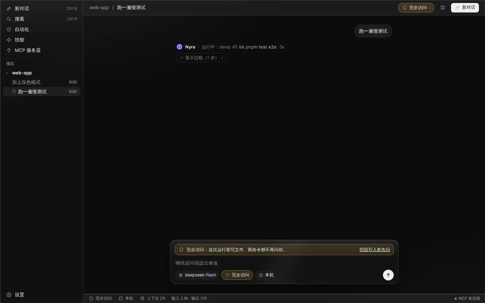
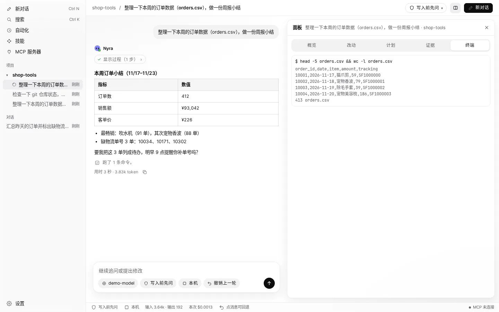
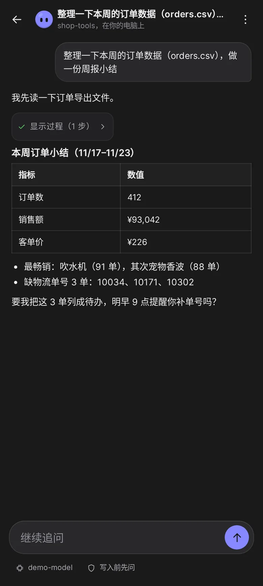

只读Read-only
只看，不改。Looks, never touches.
--mode readonly
只读Read-only
- 读文件、搜内容、上网查资料Reads files, searches and looks things up online
- 不写文件Never writes a file
- 不跑命令Never runs a command
- 适合先摸清一个陌生的代码库Good for getting to know an unfamiliar codebase
Nyra 是跑在你自己电脑上的开源 AI agent。它读项目、改代码、跑命令、上网查资料；要改文件或执行命令时，先把要做的事摆给你看，你同意了才动手。Nyra is an open-source AI agent that runs on your own computer. It reads your project, edits code, runs commands and looks things up online. Before it changes a file or runs a command, it shows you exactly what it plans to do and waits for your OK.
开源，MIT 许可Open source, MITWindows、macOS、LinuxWindows, macOS, Linux手机配对后可审批Approve from a paired phone
v0.5.4 实机截图。项目和对话是示例。Screenshots from v0.5.4, with the app set to Chinese. The project and conversation are examples.
点每一步看真实界面。旁边的团子就是 Nyra，它的眼神会跟着状态变。Click a step to see the real app. The little purple blob is Nyra; its eyes change with what it's doing.


v0.5.4 实机截图，深色模式。项目和对话是示例。Screenshots from v0.5.4 in dark mode, with the app set to Chinese. The project and conversation are examples.
三种模式，随时在输入框下方、会话里的 /mode 或启动参数 --mode 之间切换。Three modes. Switch any time from the pill under the input, with /mode in a session, or with --mode at launch.
只看，不改。Looks, never touches.
--mode readonly
每一步都先问你。Asks you at every step.
--mode auto
这一轮不再问。Stops asking for this run.
--mode full

手机和电脑配对一次，等你确认的事就会出现在手机上。点一下允许，或者回一句换个做法。活始终在你的电脑上干，手机只负责看和批。Pair your phone once and anything waiting for you shows up on it. Tap to allow, or ask for another approach. The work always runs on your computer; the phone just shows it and lets you decide.
nyra ui --pair扫终端里的二维码；也可以在手机浏览器打开终端给出的地址，输入 6 位配对码。手机和电脑要连同一个 Wi‑Fi。Scan the QR code in the terminal, or open the address it prints and enter the 6-digit code. Your phone and computer need to be on the same Wi‑Fi.
iPhone 在 Safari 里点分享 → 添加到主屏幕；安卓在 Chrome 里点 ⋮ → 添加到主屏幕，也可以装 APK。On iPhone, tap Share → Add to Home Screen in Safari. On Android, tap ⋮ → Add to Home screen in Chrome, or install the APK.
14 个预设，填上 Key 点一下「测试连接」就能用。不想把内容发到云端，就用本机的 Ollama。14 presets. Add a key, hit Test connection, and you're set. Want nothing to leave your machine? Use a local Ollama model.
Nyra 本身不收费。模型费用在你和服务商之间结算，Nyra 不经手。Nyra costs nothing. Model usage is billed between you and the provider; Nyra never touches it.
到了上限就停，不会悄悄超支。When it hits the cap, it stops. No surprise bills.
开启后主模型出错会换到你指定的备用模型，并且立刻告诉你换了。Turn it on and Nyra switches to the backup you chose when the main model fails, and tells you right away.
交出键盘之前，先弄清楚三件事：东西放在哪，它能做什么，出错了怎么办。Before you hand over the keyboard, know three things: where your stuff lives, what it can do, and what happens when something goes wrong.
~/.nyra会话、运行记录和设置都在你电脑的 ~/.nyra 里。Nyra 不发遥测，也不需要注册账户。Conversations, run records and settings live in ~/.nyra on your computer. Nyra sends no telemetry and needs no account.
nyra vault界面里填的 Key 存进加密密码箱，或只有你能读的文件（0600）。界面只显示 sk-…abcd 这样的掩码。Keys you enter go into an encrypted vault or a file only you can read (0600). The app only ever shows a mask like sk-…abcd.
/undo每次写入前自动存检查点，/undo 退一步，/rewind 退回更早。已经跑过的命令和发出的网络请求退不回来，这点我们不含糊。A checkpoint is saved before every write: /undo steps back, /rewind goes further. Commands already run and requests already sent can't be undone, and we say so.
--sandboxLinux 用 bwrap，macOS 用 seatbelt，Windows 用 Job Object。条件不满足时会直说，不会悄悄裸跑。bwrap on Linux, seatbelt on macOS, Job Object on Windows. If a sandbox isn't available, Nyra tells you instead of quietly running without one.
AGENTS.md文件工具写不出当前工作目录；.git、.nyra、AGENTS.md 这类路径默认拒写。File tools can't write outside your working folder, and paths like .git, .nyra and AGENTS.md are protected by default.
--plan--plan 只读地写出 plan.md。你批准的是那一版的 SHA-256，计划改一个字，旧的批准就作废。--plan writes plan.md without touching anything. You approve that exact version by its SHA-256; change one character and the approval no longer counts.
按间隔或每天定时跑任务。遇到要审批的操作照样停下来等你。Run tasks on an interval or every day. Anything that needs approval still waits for you.
nyra schedule add把你常用的做法写成技能，Nyra 下次照着做。Write down how you like things done as a skill, and Nyra follows it next time.
nyra --list-skills接上你已经在用的 MCP 服务器，自带 10 个常用预置。默认关闭；开启后，每个服务器启动前都会先问你。Connect the MCP servers you already use, with 10 presets built in. Off by default; once on, it asks before starting each server.
mcp_enabledGmail、Slack、Shopify（只读）连接器；也可以在 Telegram、Discord、Slack 里给 Nyra 派活。Gmail, Slack and Shopify (read-only) connectors, and you can hand Nyra work from Telegram, Discord or Slack.
nyra channels start这些还没有上线。只列已经立项的方向，不承诺日期。None of these are available yet. These are planned directions, with no promised dates.
用你自己的云账号一键部署 Nyra，电脑关着也能接着跑，手机和电脑都能连上去。Deploy Nyra to a cloud machine on your own account in one step, so it keeps working while your laptop is closed, reachable from your phone and computer.
视频通话时，两边的 agent 一起在场，共用同一个任务。对方的 agent 想改你的文件，照样要你批准。On a video call, both of your agents join in on the same task. If your friend's agent wants to change your files, it still needs your approval.
这个月已经花了多少、还剩多少，界面里一眼看到。See what you've spent this month and what's left, right in the app.
Windows 和 macOS 安装包签名之后，第一次打开就不会再弹安全提示。Once the Windows and macOS installers are signed, they'll open without a security warning.
2026 年 11 月 23 日发布。已经按你的设备选好，也可以手动切换。Released November 23, 2026. We picked your platform; switch if you need another.
Windows 10 / 11（x64）。安装包里已经带了同版本的命令行，装好就能用。Windows 10 / 11 (x64). The installer includes the matching command-line tool.
安装包还没有签名。第一次打开时如果 SmartScreen 提示「Windows 已保护你的电脑」，点「更多信息」，再点「仍要运行」。The installer isn't signed yet. If SmartScreen says “Windows protected your PC” the first time, click More info, then Run anyway.
只要命令行版，或者想用脚本装。If you only want the command-line version, or prefer a script.
irm https://raw.githubusercontent.com/js2005happy/nyra/main/scripts/install-node.ps1 | iexnyra setup更新Update
irm https://raw.githubusercontent.com/js2005happy/nyra/main/scripts/install-node.ps1 | iex卸载Uninstall
& ([scriptblock]::Create((irm https://raw.githubusercontent.com/js2005happy/nyra/main/scripts/install-node.ps1))) -Uninstall通用版，Apple 芯片和 Intel 都能装，自带同版本的命令行。A universal build for Apple silicon and Intel, with the matching command-line tool included.
还没有签名和公证。如果 macOS 提示无法验证开发者，到 系统设置 → 隐私与安全性 里点「仍要打开」，放行一次就好。Not signed or notarized yet. If macOS says it can't verify the developer, go to System Settings → Privacy & Security and click Open Anyway, once.
只要命令行版，或者想用脚本装。If you only want the command-line version, or prefer a script.
curl -fL -o nyra https://github.com/js2005happy/nyra/releases/latest/download/nyra-macos-arm64 && chmod +x nyra./nyra setupmkdir -p ~/.local/bin && mv nyra ~/.local/bin/更新Update
curl -fL -o ~/.local/bin/nyra https://github.com/js2005happy/nyra/releases/latest/download/nyra-macos-arm64 && chmod +x ~/.local/bin/nyra卸载Uninstall
rm ~/.local/bin/nyra桌面安装包是 x64，自带同版本的命令行。命令行版有 x64 和 arm64，需要 glibc。Desktop packages are x64 and include the command-line tool. The command-line tool comes in x64 and arm64 and needs glibc.
只要命令行版，或者想用脚本装。If you only want the command-line version, or prefer a script.
curl -fL -o nyra https://github.com/js2005happy/nyra/releases/latest/download/nyra-linux-x64 && chmod +x nyra./nyra setupmkdir -p ~/.local/bin && mv nyra ~/.local/bin/更新Update
curl -fL -o ~/.local/bin/nyra https://github.com/js2005happy/nyra/releases/latest/download/nyra-linux-x64 && chmod +x ~/.local/bin/nyra卸载Uninstall
rm ~/.local/bin/nyra手机端连的是你电脑上的 Nyra，所以先在电脑上装好。iPhone 和安卓都可以用网页应用，安卓也可以装 APK。The phone app connects to Nyra on your computer, so install it there first. iPhone and Android can use the web app; Android can also install the APK.
APK 是调试版，没有上架应用商店。手机端还在早期，欢迎把真机上遇到的问题告诉我们。The APK is a debug build and isn't in any app store. The phone app is early; reports from real devices are very welcome.
nyra ui --pair所有文件和更新说明在All files and release notes are on v0.5.8 发布页the v0.5.8 release page。.
更多问题在完整列表里；找不到答案，就到 GitHub Issues 问。More in the full list. Can't find an answer? Ask on GitHub Issues.
Nyra 本身免费、开源，以 MIT 许可发布。调用模型的费用在你和模型服务商之间结算；也可以用本机的 Ollama，或复用本机的 Codex 登录。Nyra itself is free and open source under the MIT License. Model usage is billed between you and your provider; you can also use a local Ollama model or reuse the Codex sign-in on your machine.
默认的「写入前先问」模式下，写文件和跑命令前都会先问你。文件工具写不出当前工作目录，.git、.nyra 和 AGENTS.md 这类路径默认拒写。每次写入前都会存检查点，改错了可以 /undo。In the default Ask before writing mode, it asks before it writes a file or runs a command. File tools can't write outside your working folder, and paths like .git, .nyra and AGENTS.md are protected by default. A checkpoint is saved before every write, so /undo can take it back.
DeepSeek（默认）、xAI Grok、OpenAI、通义千问、Kimi、智谱 GLM、Gemini、OpenRouter、Mistral、Groq、Together、本机 Ollama、本机 Codex 登录，以及任何兼容 OpenAI 接口的自定义服务。运行 nyra --list-providers 查看全部。DeepSeek (the default), xAI Grok, OpenAI, Qwen, Kimi, Zhipu GLM, Gemini, OpenRouter, Mistral, Groq, Together, a local Ollama, the Codex sign-in on your machine, and any custom OpenAI-compatible endpoint. Run nyra --list-providers to see them all.
会话、记忆、证据、检查点、定时任务和设置都在你电脑的 ~/.nyra 里，Nyra 不发遥测。完成任务时，你的指令和放进上下文的内容会发给你选的模型服务商；用本机 Ollama 时这些内容不出电脑。详见隐私政策。Conversations, memory, evidence, checkpoints, schedules and settings live in ~/.nyra on your computer, and Nyra sends no telemetry. To do a task, your instructions and the content placed in context go to the model provider you chose; with a local Ollama model they never leave your machine. See the Privacy Policy.
不用。在电脑上运行 nyra ui --pair，用手机扫终端里的二维码（或打开它给出的地址、输入配对码），再添加到主屏幕。安卓也可以装 Release 里的 APK（调试版）。手机和电脑需要在同一个 Wi‑Fi 下，工具始终在电脑上执行。No. Run nyra ui --pair on your computer, scan the QR code in the terminal with your phone (or open the address it prints and enter the code), then add it to your home screen. On Android you can also install the APK (debug build) from the release. Your phone and computer need to be on the same Wi‑Fi, and tools always run on the computer.
Windows 和 macOS 的安装包还没有签名和公证。Windows 上点「更多信息 → 仍要运行」；macOS 上到 系统设置 → 隐私与安全性 点「仍要打开」，放行一次即可。签名正在准备。The Windows and macOS installers aren't signed or notarized yet. On Windows choose More info → Run anyway; on macOS go to System Settings → Privacy & Security and click Open Anyway, once. Signing is in the works.
比如「解释一下这个项目」。只读模式下它什么都不会改。Try “explain this project.” In read-only mode it won't change a thing.